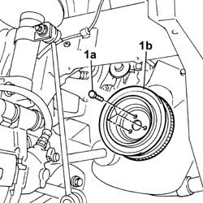
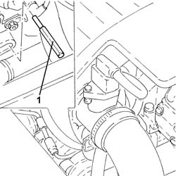
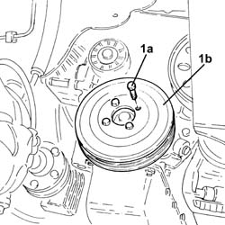
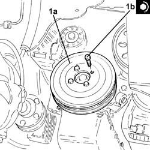

1092A12 crankshaft pulley - r+r for versions with air conditioner
- Path
- Procedures > 10 ENGINE UNIT > 1092 VARIOUS ENGINE COMPONENT CONTROLS > 1092A crankshaft pulley and idle pulleys > 1092A12 crankshaft pulley - r+r for versions with air conditioner
- Kind
- repair procedure (removal / refitting; the operation number is the code)
- Applies to
- all engines; all production periods
- Interactive page
- https://sloeber94.github.io/elrnDB-fPnd/en/#/2752554
Applies to: engines: 1.1; all production periods
 Removing
Removing
 Refitting
Refitting1092B40 air conditioner compressor/alternator drive belt - r + r
1. Undo the fixing bolts (1a) and remove the crankshaft services pulley (1b).

Applies to: engines: 1.2 8v; all production periods
Removing
Refitting1092B40 air conditioner compressor/alternator drive belt - r + r
1. Undo the fixing bolts (1a) and remove the crankshaft services pulley (1b).
Applies to: engines: 1.3 JTD 16v; all production periods
Removing
RefittingRemove the car from the ramps.
1092G11 Engine components single drive BELT - R.R. for versions with air conditioning
1. Fit a pin (8 mm diameter) through the hole on the gearbox, to be used for countertorque.

Applies to: engines: 1.1; all production periods
Refitting
RemovingFit the crankshaft services pulley in place and tighten the fixing bolts to the recommended torque.
 | Fastening | Component | Ø | Value (daNm) |
|---|---|---|---|---|
- | Bolt | CRANKSHAFT PULLEY | M8 x 1.25 | 2.2 |
1092B40 air conditioner compressor/alternator drive belt - r + r
Applies to: engines: 1.2 8v; all production periods
Refitting
RemovingFit the crankshaft services pulley in place and tighten the fixing bolts to the recommended torque.
| Fastening | Component | Ø | Value (daNm) |
|---|---|---|---|---|
- | Bolt | CRANKSHAFT PULLEY | M8 x 1.25 | 2.2 |
1092B40 air conditioner compressor/alternator drive belt - r + r
Applies to: engines: 1.3 JTD 16v; all production periods
1. Undo the bolts (1a) and remove the crankshaft pulley (1b).

Applies to: engines: 1.3 JTD 16v; all production periods
Refitting
Removing1. Fit the crankshaft pulley (1a) in place and secure it tightening the bolts (1b) to the recommended torque.
| Fastening | Component | Ø | Value (daNm) |
|---|---|---|---|---|
1b | Bolt | CRANKSHAFT PULLEY | M8 | (Crankshaft flange side) 2.3 ÷ 2.8 |

Applies to: engines: 1.3 JTD 16v; all production periods
Remove the pin from the hole on the gearbox.
1092G11 Engine components single drive BELT - R.R. for versions with air conditioning
Remove the car from the ramps.
Topics linked from this page (4)
- 1092B40 air conditioner compressor/alternator drive belt - r + r
- 1092G11 Engine components single drive BELT - R.R. for versions with air conditioning
- 4450B04 right front wheel r r
- 5510C26 rpm sensor - r+r
Topics that link to this page (27)
- 0510A20 timing gear with belt drive - check - carry out operation with cam cover(s) removed and tappets adjusted
- 0510A30 cam lift - check with cam cover(s) removed
- 1016B10 single cylinder head extension - change gasket
- 1016C11 SINGLE CYLINDER HEAD-R R GASKET FOR VERSIONS WITH AIR CONDITIONER
- 1020B12 CHAIN-DRIVE VALVE GEAR COVER - R.R. AND GASKET REPLACEMENT FOR MODELS WITH AIR-CONDITIONER
- 1020B30 timing system cover oil seal - replace
- 1020D16 FRONT CRANKSHAFT OIL SEAL COVER - R+R AND REPLACE GASKETS FOR VERSIONS WITH AIRCONDITIONER
- 1020D20 FRONT CRANKSHAFT COVER OIL SEAL - REPLACE FOR VERSIONS WITH AIR CONDITIONER
- 1028H11 piston connecting rod set - r r
- 1028H21 piston with connecting rod - r r
- 1032A12 CHAIN AND GEARS for timing system - R.R. for timing or Replacement.
- 1032B14 toothed timing belt - r + r for timing adjustment or replacement versions with air conditioner
- 1032B47 toothed drive pulley - r r for versions with air conditioner
- 1032B53 driven toothed pulley (one) - r r for versions with air conditioner
- 1032B62 a/c duct pulley - r r
- 1032C19 mobile timing belt tensioner - r r for versions with air conditioner
- 1032C40 Timing CHAIN TENSIONER PLATE - R.R.
- 1032D12 timing system protective cover(s) - r + r
- 1036B10 overhead camshaft - r r on vehicle
- 1036H57 hydraulic tappets all r r
- 1036L10 camshafts in cylinder head extension - r r - includes cylinder head extension replacement if necessary
- 1084B16 engine oil pump - r+r vehicles with a/c
- 1084B26 emgine oil intake duct - r r
- 1084B45 RIGID air supply PIPE between air-air heat exchanger and intermediate hose - R.R.
- 1088C12 water pump - r+r for versions with air conditioner
- 1092A14 Pulley support FLANGE on crankshaft - R.R.
- 5040A26 compressor mount - r r